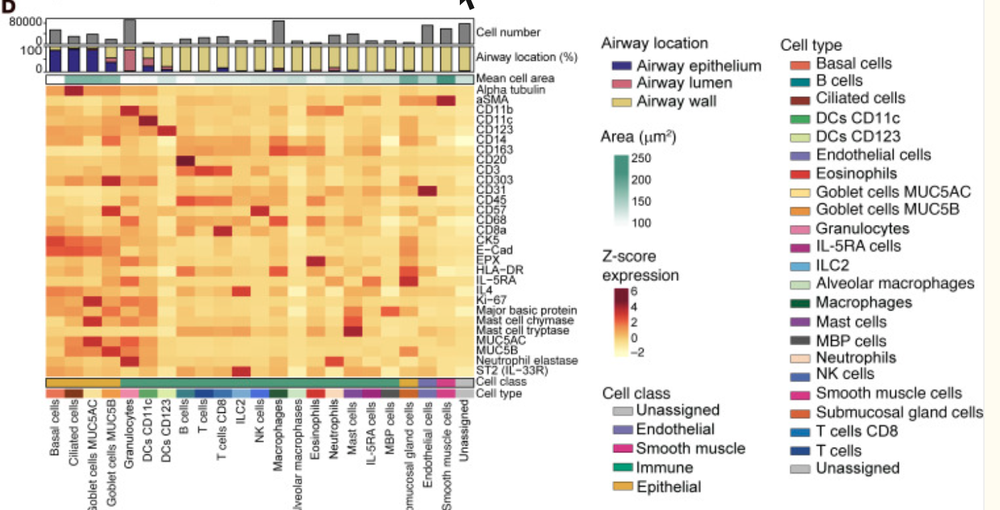

Ki-67 (MKI67) is the universal proliferation marker, nuclear in cycling cells of any lineage.
Auto-compiled from Europe PMC: open-access papers where Ki-67 co-occurs with a CODEX / PhenoCycler, MIBI, CyCIF or imaging-mass-cytometry method. See all results →
